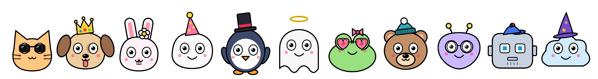
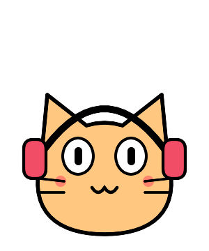
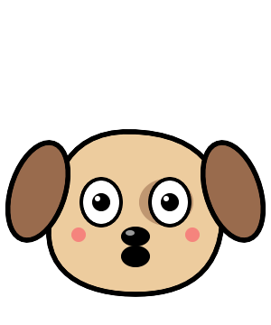
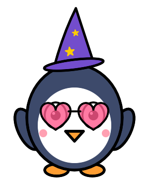
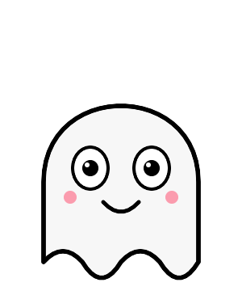
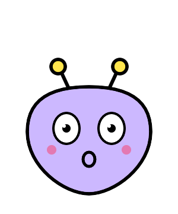

Tiny doodle pets that live on your Mac desktop.

Pick from 11 doodles, give them names, and keep up to 8 on screen at once. They walk along the Dock, hop, roll and float, and say hi when they bump into each other.

Headphones on whenever Apple Music or Spotify is playing.
Throw a ball. They chase it, catch it and toss it back to your cursor.

Every species has a favourite. The dog wants a bone.

Nine hats and three pairs of glasses, from crowns to wizard hats.

Grab a pet and fling it. It bounces, or drifts if it's a ghost.

A heads-up before meetings, cheers when you plug in, sweat when the battery runs low.
Two ways. Both put DoodlePin in your Applications folder and open it. Look for the blob face in your menu bar.
Open Terminal (press ⌘ Space, type “Terminal”), paste this and press Return:
curl -fsSL https://xoftverse.com/doodle-pin/install.sh | bash
bash (with a space), then drag install.sh from the unzipped folder into the window.Why Terminal? DoodlePin isn't notarized by Apple yet, so macOS would refuse to open it with a double-click. The installer clears the “downloaded from the internet” flag on DoodlePin only, so it opens normally. To remove it later, run bash install.sh --uninstall.
No accounts, no analytics, no ads. DoodlePin never connects to the internet, so nothing it sees ever leaves your Mac. Read the privacy policy.